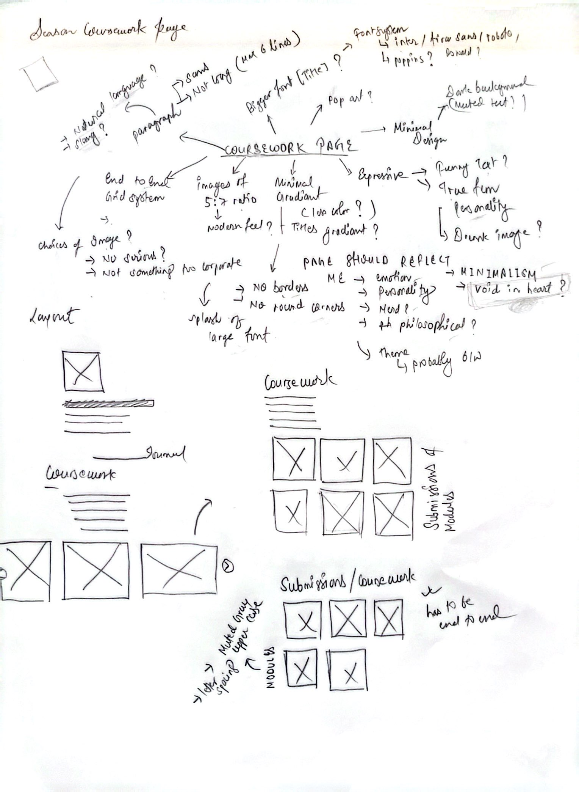
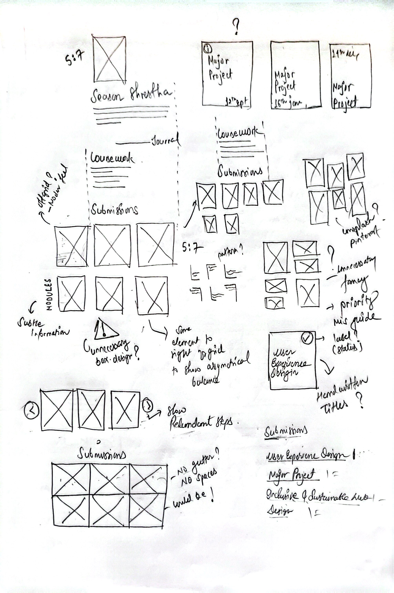
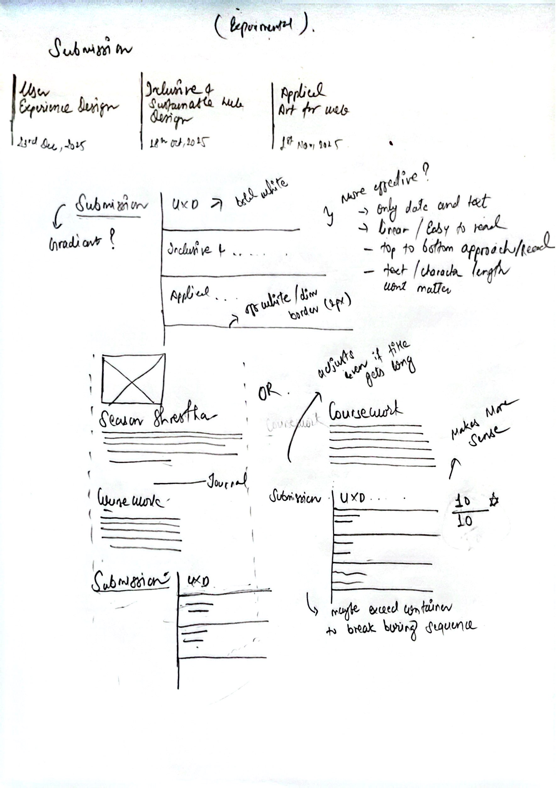
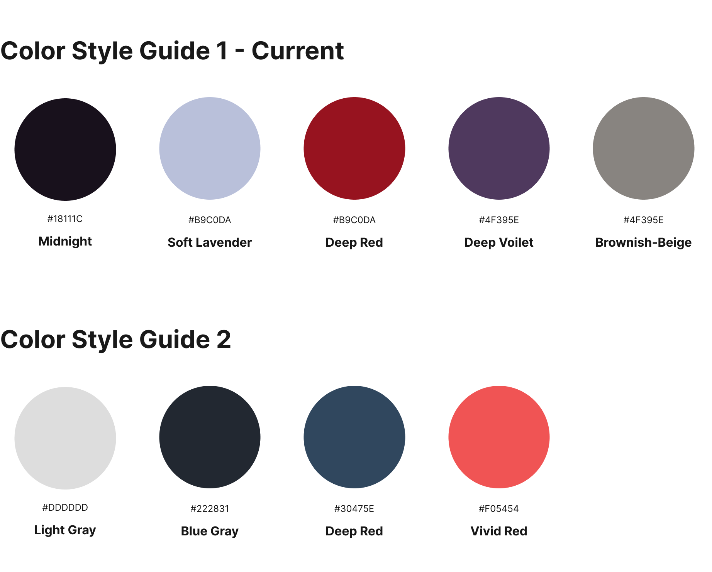

Overall page vibe & submission layout
I thought and thought and thought.....

Again, I thought and thought and thought.....

Finally, I stopped thinking.

Well I am sure about the color scheme, probably,maybe,maybe not, but here it is.
